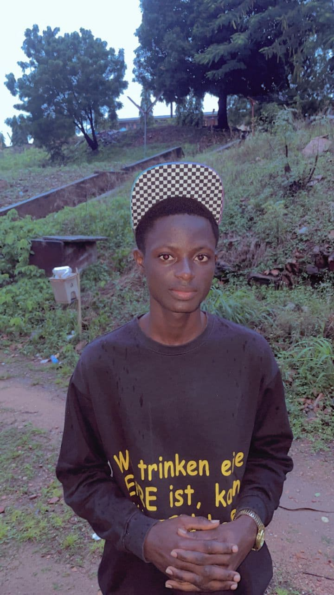

Elie Koffi SOLOME | WDD 130

Hello! My name is Elie Koffi SOLOME and I am from Lomé, Togo. I love my country, with its diverse landscapes and structures. I enjoy playing football and listening to music. I am currently studying mathematics at the University of Lomé and pursuing a Bachelor's degree in Software Development through BYU-Idaho. My goal is to become a skilled programmer and one day pursue a Master's degree abroad.